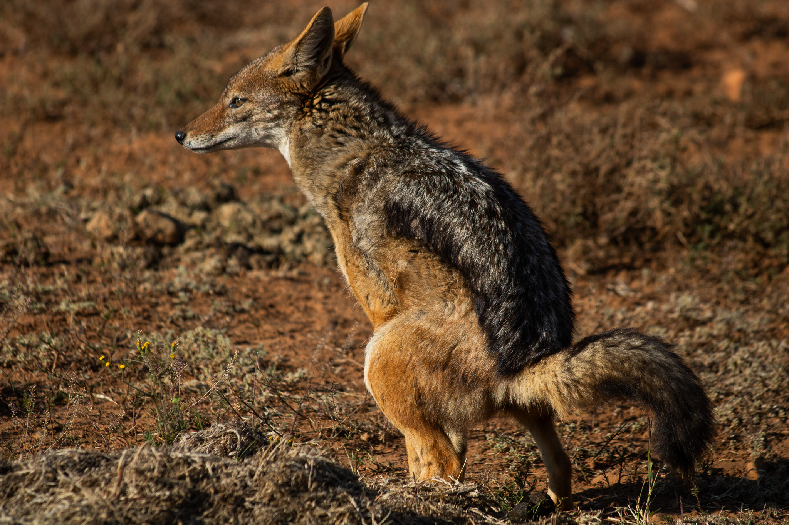
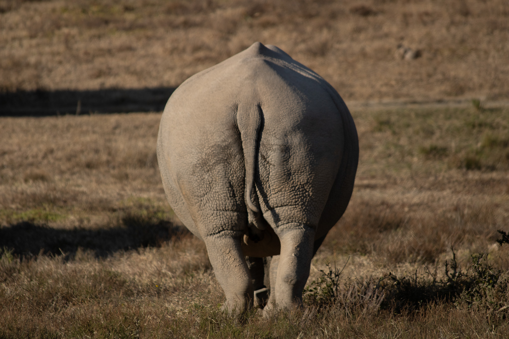
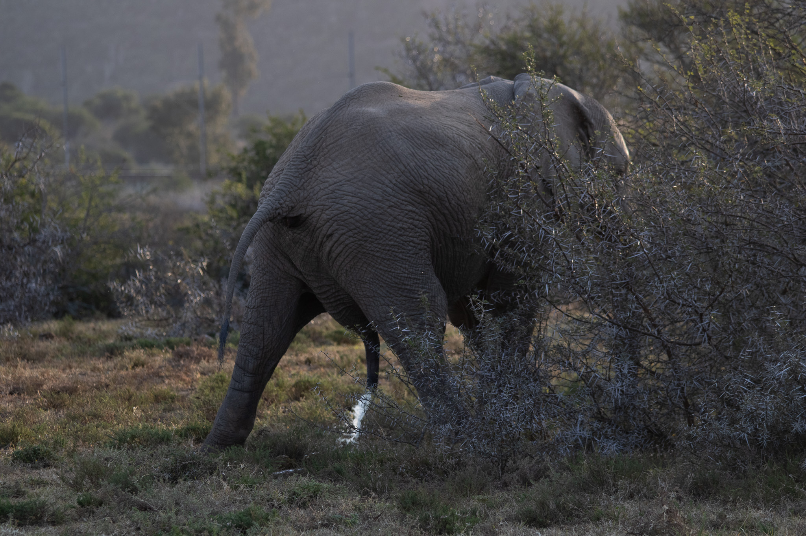
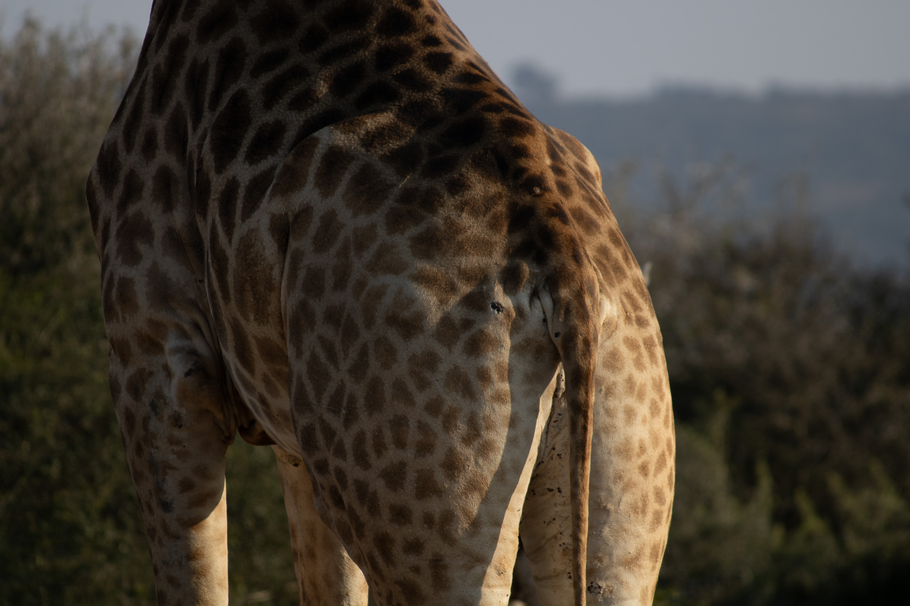

Our Animals...

Larry The Lion

Introducing Johnny, our sharp-witted side-striped jackal with a tale as remarkable as his keen senses! Johnny’s journey to [Zoo Name] is one of resilience and second chances. Found injured near a bustling South African village, Johnny had been caught in a conflict between wildlife and humans—his natural habitat was shrinking, and he was struggling to survive.
A group of dedicated wildlife rescuers stepped in to help, nursing Johnny back to health after a leg injury left him unable to fend for himself. Though returning to the wild was no longer an option, Johnny has found a new purpose here with us, inspiring visitors to learn about the challenges animals like him face in the wild.
In his habitat, Johnny shows off his playful yet cautious nature. He enjoys exploring enrichment activities, foraging for treats, and occasionally surprising us with his famous jackal howl. His sharp eyes and alert ears make him one of the most fascinating animals to observe!
Johnny’s story is a reminder of how human-wildlife coexistence can work when compassion leads the way. Stop by and meet Johnny to hear more about his journey and how we’re working to protect jackals and other wildlife. 🐾
Johnny The Jackal

Say hello to Rosie, our resilient southern white rhinoceros with a story as strong as her horn! Rosie was rescued from a dangerous poaching incident in South Africa, where she narrowly escaped losing her horn to illegal wildlife traffickers.
Brought to safety by a team of conservationists, Rosie received the care she needed to recover from her injuries. Although the scars of her past remain, her spirit is as strong as ever. Now, she thrives in her habitat at [Zoo Name], where she roams peacefully, enjoying mud wallows and hearty meals of fresh grass and hay.
Rosie is an ambassador for rhino conservation, reminding us all of the importance of protecting these gentle giants. Come meet Rosie and learn how you can help ensure a future where rhinos roam free. 🦏
Rosie The Rhino

Get to know Ellie, our wise and wonderful African elephant! Ellie was rescued as a calf after her herd fell victim to human-wildlife conflict in South Africa. Alone and vulnerable, Ellie was found by conservationists who brought her to safety.
Since arriving at [Zoo Name], Ellie has blossomed into a playful and curious elephant who loves splashing in her pool, exploring her habitat, and showing off her impressive trunk skills. Her story is a reminder of how crucial it is to protect the habitats elephants need to thrive.
Ellie’s charisma and charm make her a favorite among visitors of all ages. Stop by and watch her in action—she might even wave her trunk to say hello! 🐘
Ellie THe Elephant

Introduction: Say hi to Gerald, our towering giraffe with an equally impressive story! Gerald was rescued as a calf when drought conditions in South Africa left his family struggling to find food. Underweight and dehydrated, Gerald was taken in by wildlife experts who nursed him back to health.
Now at [Zoo Name], Gerald enjoys a life full of leafy treats and plenty of space to stretch his long legs and neck. He’s known for his curiosity, often inspecting visitors with his big, gentle eyes and playful demeanor.
Gerald’s story is a testament to the importance of conservation efforts during times of environmental hardship. Visit Gerald and discover the fascinating world of giraffes—don’t forget to look up! 🦒